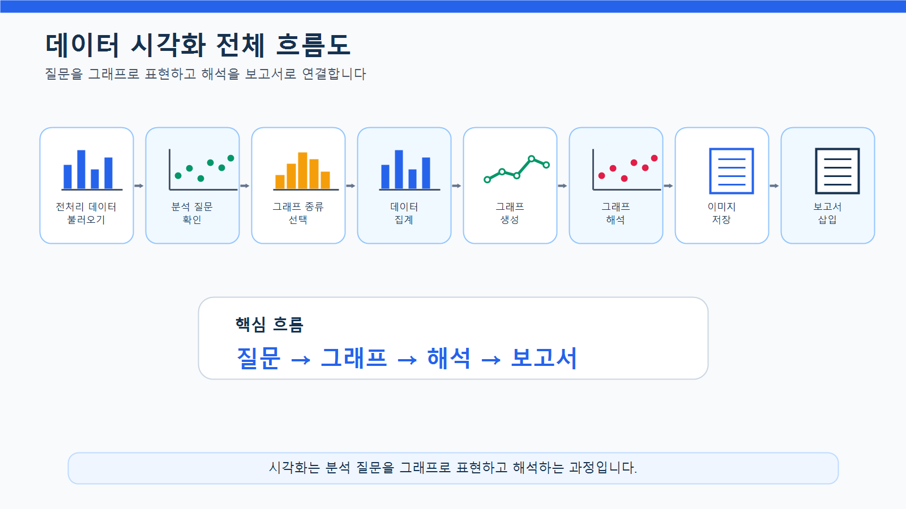
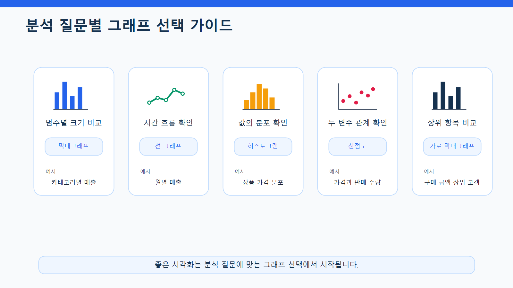
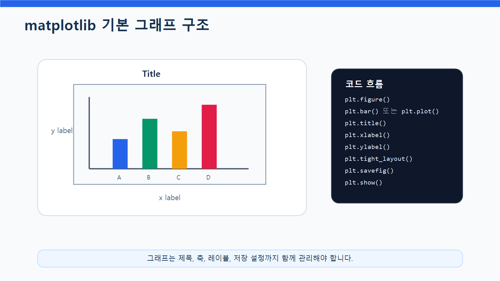
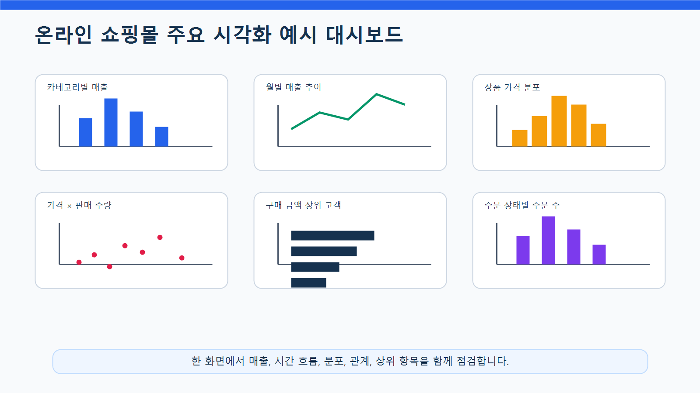
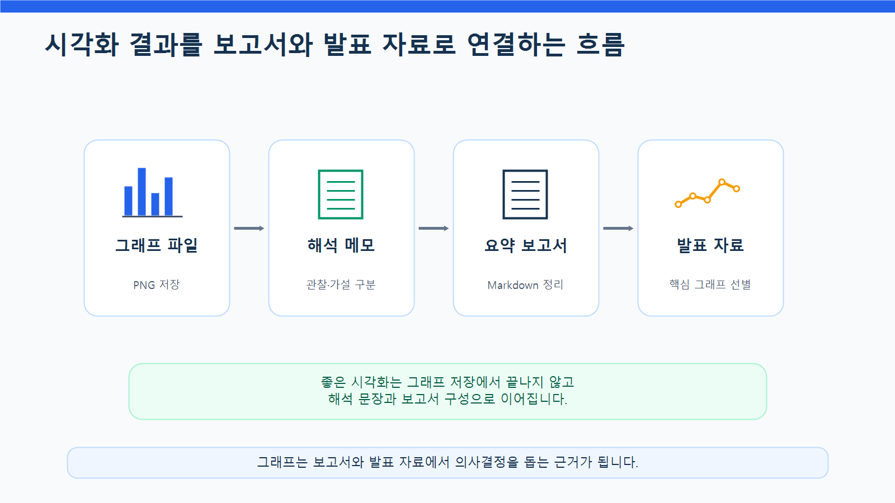

7장 데이터 시각화
이 장에서는 Chapter 6에서 수행한 EDA 결과를 바탕으로 데이터 시각화를 실습합니다. Chapter 6에서는 고객, 상품, 주문, 매출 데이터를 탐색하고 분석 질문을 만들었다면, 이번 장에서는 그 결과를 그래프로 표현해 더 직관적으로 이해하고 전달하는 방법을 배웁니다.
데이터 분석에서 시각화는 단순히 예쁜 그래프를 만드는 작업이 아닙니다. 시각화는 데이터의 패턴, 차이, 추세, 분포, 관계를 빠르게 파악하고, 분석 결과를 다른 사람에게 설득력 있게 전달하기 위한 핵심 도구입니다.
예를 들어 카테고리별 매출 표만 보면 어느 카테고리가 높은지 확인할 수는 있지만, 막대그래프로 보면 차이가 훨씬 빠르게 보입니다. 월별 매출은 표보다 선 그래프로 표현할 때 증가와 감소 흐름을 더 쉽게 이해할 수 있습니다.
이번 장의 핵심은 분석 질문에 맞는 그래프를 선택하고, 그래프를 통해 데이터를 해석하는 능력입니다.
수업 시간 구성
| 구성 | 권장 시간 |
|---|---|
| 데이터 시각화 개념 이해 | 30분 |
| 그래프 종류와 선택 기준 | 35분 |
| matplotlib 기본 구조 실습 | 40분 |
| 막대그래프 실습 | 40분 |
| 선 그래프 실습 | 35분 |
| 히스토그램과 산점도 실습 | 45분 |
| 시각화 결과 저장 | 30분 |
| LLM을 활용한 그래프 해석 보조 | 30분 |
| 연습 문제 및 심화 과제 | 60~90분 |
기본 수업은 약 4~5시간을 기준으로 구성되어 있습니다. 그래프 디자인 개선, 보고서 삽입, 발표용 해석 문장 작성까지 포함하면 5~6시간 분량으로 확장할 수 있습니다.
1. 학습 목표
이 장을 마치면 학습자는 다음을 할 수 있습니다.
- 데이터 시각화가 필요한 이유를 설명할 수 있습니다.
- 분석 질문에 맞는 그래프 종류를 선택할 수 있습니다.
- matplotlib의 기본 구조를 이해할 수 있습니다.
- 막대그래프로 범주별 크기를 비교할 수 있습니다.
- 선 그래프로 시간에 따른 변화를 표현할 수 있습니다.
- 히스토그램으로 숫자형 데이터의 분포를 확인할 수 있습니다.
- 산점도로 두 숫자형 변수의 관계를 탐색할 수 있습니다.
- 그래프 제목, 축 이름, 눈금, 레이블을 설정할 수 있습니다.
- 한글 폰트 설정 문제를 해결할 수 있습니다.
- 그래프를 이미지 파일로 저장할 수 있습니다.
- 시각화 결과를 보고서 문장으로 해석할 수 있습니다.
- LLM이 제안한 그래프 해석을 데이터에 근거해 검증할 수 있습니다.
2. 이번 장에서 만들 결과물
이번 장에서는 전처리 및 EDA 결과를 바탕으로 다음 시각화 결과물을 만듭니다.
- 카테고리별 매출 막대그래프
- 월별 매출 선 그래프
- 상품 가격 분포 히스토그램
- 상품 가격과 판매 수량 관계 산점도
- 고객별 구매 금액 상위 10명 막대그래프
- 주문 상태별 주문 수 막대그래프
- 시각화 결과 이미지 파일
- 그래프 해석 메모
- LLM 그래프 해석 프롬프트와 검증 결과
reports/ch07_visualization_summary.md요약 보고서
아래 그림은 데이터 시각화가 분석 과정에서 어떤 역할을 하는지 보여줍니다.

3. 핵심 개념
3.1 데이터 시각화란 무엇인가
데이터 시각화는 숫자와 표로 된 데이터를 그래프나 차트로 표현하는 과정입니다. 시각화를 사용하면 데이터의 차이, 흐름, 분포, 관계를 더 빠르게 이해할 수 있습니다.
데이터 시각화는 다음 목적을 가집니다.
- 데이터의 전체 패턴을 빠르게 파악합니다.
- 그룹 간 차이를 비교합니다.
- 시간에 따른 변화를 확인합니다.
- 숫자형 데이터의 분포를 이해합니다.
- 변수 간 관계를 탐색합니다.
- 이상값이나 특이한 패턴을 발견합니다.
- 분석 결과를 보고서나 발표 자료로 전달합니다.
시각화는 분석의 마지막 장식이 아니라, 분석 과정 전체에서 사용되는 탐색 도구입니다.
3.2 그래프 선택 기준
좋은 시각화는 분석 질문에 맞는 그래프를 선택하는 것에서 시작합니다.
| 분석 목적 | 적합한 그래프 | 예시 질문 |
|---|---|---|
| 범주별 크기 비교 | 막대그래프 | 카테고리별 매출은 어떻게 다른가? |
| 시간 흐름 확인 | 선 그래프 | 월별 매출은 어떻게 변하는가? |
| 값의 분포 확인 | 히스토그램 | 상품 가격은 어떤 범위에 몰려 있는가? |
| 두 변수 관계 확인 | 산점도 | 가격과 판매 수량은 관계가 있는가? |
| 상위 항목 비교 | 가로 막대그래프 | 구매 금액 상위 고객은 누구인가? |
| 비율 비교 | 막대그래프 또는 파이 차트 | 주문 상태별 비중은 어떻게 되는가? |
파이 차트는 비율을 직관적으로 보여줄 수 있지만, 항목이 많거나 값 차이가 작으면 비교가 어렵습니다. 실무에서는 비율 비교도 막대그래프로 표현하는 경우가 많습니다.
아래 그림은 분석 질문에 따라 어떤 그래프를 선택하면 좋은지 보여줍니다.

3.3 matplotlib 기본 구조
matplotlib은 Python에서 가장 널리 사용되는 시각화 라이브러리 중 하나입니다. pandas 분석 결과를 그래프로 표현할 때 자주 사용합니다.
matplotlib 그래프는 보통 다음 순서로 작성합니다.
- 그래프 크기를 정합니다.
- 그래프 종류를 선택합니다.
- x축과 y축 데이터를 지정합니다.
- 제목과 축 이름을 추가합니다.
- 눈금과 레이블을 정리합니다.
- 그래프를 화면에 표시합니다.
- 필요하면 이미지 파일로 저장합니다.
기본 구조는 다음과 같습니다.
import matplotlib.pyplot as plt
plt.figure(figsize=(10, 5))
plt.bar(x_data, y_data)
plt.title("그래프 제목")
plt.xlabel("x축 이름")
plt.ylabel("y축 이름")
plt.xticks(rotation=45)
plt.tight_layout()
plt.show()아래 그림은 matplotlib 그래프가 어떤 요소로 구성되는지 보여줍니다.

3.4 한글 폰트 설정
matplotlib에서 한글 제목이나 축 이름을 사용하면 글자가 깨질 수 있습니다. Windows 환경에서는 보통 Malgun Gothic을 사용합니다.
import matplotlib.pyplot as plt
plt.rcParams["font.family"] = "Malgun Gothic"
plt.rcParams["axes.unicode_minus"] = Falseaxes.unicode_minus를 False로 설정하면 음수 기호가 깨지는 문제를 줄일 수 있습니다.
Mac 환경에서는 AppleGothic, Linux 환경에서는 NanumGothic을 사용할 수 있습니다.
# Mac 예시
plt.rcParams["font.family"] = "AppleGothic"
plt.rcParams["axes.unicode_minus"] = False# Linux 예시
plt.rcParams["font.family"] = "NanumGothic"
plt.rcParams["axes.unicode_minus"] = False수업 환경이 Windows라면 우선 Malgun Gothic을 기준으로 설명하면 됩니다.
3.5 막대그래프
막대그래프는 범주별 크기를 비교할 때 사용합니다.
예를 들어 다음 질문에 적합합니다.
- 카테고리별 매출은 어떻게 다른가?
- 주문 상태별 주문 수는 어떻게 다른가?
- 결제수단별 주문 수는 어떻게 다른가?
- 고객별 구매 금액 상위 10명은 누구인가?
막대그래프는 x축에 범주, y축에 값을 배치합니다.
3.6 선 그래프
선 그래프는 시간에 따른 변화를 확인할 때 사용합니다.
예를 들어 다음 질문에 적합합니다.
- 월별 매출은 어떻게 변하는가?
- 월별 주문 수는 증가하고 있는가?
- 특정 기간에 매출이 갑자기 증가하거나 감소했는가?
선 그래프에서는 x축 순서가 중요합니다. 날짜나 월이 올바른 순서로 정렬되어 있어야 합니다.
3.7 히스토그램
히스토그램은 숫자형 데이터의 분포를 확인할 때 사용합니다.
예를 들어 다음 질문에 적합합니다.
- 상품 가격은 어느 구간에 많이 몰려 있는가?
- 고객 나이는 어떤 범위에 많이 분포하는가?
- 주문 상세 금액은 대부분 어느 정도인가?
히스토그램은 값의 범위를 여러 구간으로 나누고, 각 구간에 데이터가 몇 개 있는지 보여줍니다.
3.8 산점도
산점도는 두 숫자형 변수의 관계를 확인할 때 사용합니다.
예를 들어 다음 질문에 적합합니다.
- 상품 가격이 높을수록 판매 수량은 줄어드는가?
- 고객별 주문 횟수가 많을수록 총 구매 금액도 큰가?
- 상품별 판매 수량과 매출은 어떤 관계가 있는가?
산점도는 관계를 탐색하는 데 유용하지만, 상관관계가 보인다고 해서 원인 관계가 있다는 뜻은 아닙니다.
4. 실습 시나리오
이번 장의 실습 시나리오는 다음과 같습니다.
온라인 쇼핑몰 운영자가 EDA 결과를 더 쉽게 이해하고 보고서에 활용하기 위해 주요 분석 결과를 그래프로 표현하려고 합니다. 카테고리별 매출, 월별 매출, 상품 가격 분포, 상품 가격과 판매 수량 관계, 고객별 구매 금액 상위 10명을 시각화합니다.
이번 장에서 사용할 주요 시각화 질문은 다음과 같습니다.
| 시각화 질문 | 사용할 데이터 | 그래프 |
|---|---|---|
| 카테고리별 매출은 어떻게 다른가? | category_sales | 막대그래프 |
| 월별 매출은 어떻게 변하는가? | monthly_sales | 선 그래프 |
| 상품 가격은 어떤 구간에 몰려 있는가? | products | 히스토그램 |
| 상품 가격과 판매 수량은 관계가 있는가? | product_sales | 산점도 |
| 구매 금액 상위 고객은 누구인가? | customer_sales | 가로 막대그래프 |
| 주문 상태별 주문 수는 어떻게 다른가? | orders | 막대그래프 |
아래 그림은 이번 장에서 만들 주요 시각화 결과를 한 화면에 요약한 예시입니다.

5. 실습 코드
이번 장의 전체 실습은 다음 Notebook에서 진행합니다.
notebooks/ch07_data_visualization.ipynb본문에는 핵심 코드만 제공합니다.
5.1 기본 패키지 불러오기
from pathlib import Path
import pandas as pd
import matplotlib.pyplot as plt한글 폰트를 설정합니다.
plt.rcParams["font.family"] = "Malgun Gothic"
plt.rcParams["axes.unicode_minus"] = False실습 파일을 프로젝트 루트에서 실행하는 경우와 notebooks 폴더 안에서 실행하는 경우에는 상대 경로가 달라질 수 있습니다. 초보자는 두 경로 예시를 모두 실행하지 말고, 아래처럼 현재 실행 위치를 기준으로 base_dir를 자동으로 정한 뒤 사용하는 것이 안전합니다.
current_dir = Path.cwd()
if current_dir.name == "notebooks":
base_dir = current_dir.parent
else:
base_dir = current_dir
processed_dir = base_dir / "data" / "processed"
report_dir = base_dir / "reports"
figure_dir = report_dir / "figures"
figure_dir.mkdir(parents=True, exist_ok=True)
print("processed_dir:", processed_dir)
print("report_dir:", report_dir)
print("figure_dir:", figure_dir)이 코드를 사용하면 노트북을 프로젝트 루트에서 실행하든 notebooks 폴더 안에서 실행하든 같은 방식으로 동작합니다.
경로가 올바르게 설정되었는지 확인하려면 다음 코드를 실행합니다.
print("processed_dir exists:", processed_dir.exists())
print("figure_dir exists:", figure_dir.exists())to_markdown()을 사용하려면 환경에 따라 tabulate 패키지가 필요할 수 있습니다. 오류가 발생하면 터미널 또는 노트북에서 pip install tabulate를 실행하세요.
pip install tabulate5.2 전처리 데이터 불러오기
앞에서 설정한 processed_dir를 사용해 전처리 데이터를 불러옵니다.
customers = pd.read_csv(processed_dir / "customers_clean.csv")
products = pd.read_csv(processed_dir / "products_clean.csv")
orders = pd.read_csv(processed_dir / "orders_clean.csv")
order_items = pd.read_csv(processed_dir / "order_items_clean.csv")날짜 컬럼을 다시 변환합니다.
orders["order_date"] = pd.to_datetime(orders["order_date"], errors="coerce")
if "order_month" not in orders.columns:
orders["order_month"] = orders["order_date"].dt.to_period("M").astype(str)line_total이 없으면 다시 생성합니다.
if "line_total" not in order_items.columns:
order_items["line_total"] = order_items["quantity"] * order_items["unit_price"]5.3 시각화를 위한 집계 데이터 만들기
상품 데이터와 주문 상세 데이터를 병합합니다.
sales_items = order_items.merge(
products,
on="product_id",
how="left"
)카테고리별 매출을 계산합니다.
category_sales = (
sales_items
.groupby("category", as_index=False)
.agg(
total_quantity=("quantity", "sum"),
total_sales=("line_total", "sum")
)
.sort_values("total_sales", ascending=False)
)
category_sales["sales_ratio"] = (
category_sales["total_sales"] / category_sales["total_sales"].sum() * 100
).round(2)
category_sales주문 데이터와 주문 상세 데이터를 병합합니다.
order_sales = order_items.merge(
orders,
on="order_id",
how="left"
)
order_sales["order_date"] = pd.to_datetime(order_sales["order_date"], errors="coerce")
order_sales["order_month"] = order_sales["order_date"].dt.to_period("M").astype(str)월별 매출을 계산합니다.
monthly_sales = (
order_sales
.groupby("order_month", as_index=False)
.agg(
total_sales=("line_total", "sum"),
order_count=("order_id", "nunique")
)
.sort_values("order_month")
)
monthly_sales상품별 매출과 판매 수량을 계산합니다.
product_sales = (
sales_items
.groupby(["product_id", "product_name", "category", "price"], as_index=False)
.agg(
total_quantity=("quantity", "sum"),
total_sales=("line_total", "sum")
)
.sort_values("total_sales", ascending=False)
)
product_sales.head()고객별 구매 금액을 계산합니다.
customer_sales_base = order_sales.merge(
customers,
on="customer_id",
how="left"
)
customer_sales = (
customer_sales_base
.groupby(["customer_id", "name", "city"], as_index=False)
.agg(
order_count=("order_id", "nunique"),
total_sales=("line_total", "sum")
)
.sort_values("total_sales", ascending=False)
)
customer_sales["avg_order_value"] = (
customer_sales["total_sales"] / customer_sales["order_count"]
).round(0)
customer_sales.head()5.4 카테고리별 매출 막대그래프
카테고리별 매출을 막대그래프로 표현합니다.
plt.figure(figsize=(10, 5))
plt.bar(
category_sales["category"],
category_sales["total_sales"]
)
plt.title("카테고리별 매출")
plt.xlabel("카테고리")
plt.ylabel("총매출")
plt.xticks(rotation=45)
plt.tight_layout()
plt.show()그래프를 파일로 저장합니다.
plt.figure(figsize=(10, 5))
plt.bar(
category_sales["category"],
category_sales["total_sales"]
)
plt.title("카테고리별 매출")
plt.xlabel("카테고리")
plt.ylabel("총매출")
plt.xticks(rotation=45)
plt.tight_layout()
plt.savefig(figure_dir / "ch07_category_sales_bar.png", dpi=150)
plt.show()해석 예시는 다음과 같습니다.
카테고리별 매출 막대그래프를 보면 어떤 카테고리가 전체 매출에 크게 기여하는지 확인할 수 있습니다.
다만 매출이 높은 이유가 판매 수량 때문인지, 단가 때문인지는 추가 분석이 필요합니다.5.5 월별 매출 선 그래프
월별 매출 흐름을 선 그래프로 표현합니다.
plt.figure(figsize=(10, 5))
plt.plot(
monthly_sales["order_month"],
monthly_sales["total_sales"],
marker="o"
)
plt.title("월별 매출 추이")
plt.xlabel("주문 월")
plt.ylabel("총매출")
plt.xticks(rotation=45)
plt.tight_layout()
plt.show()그래프를 저장합니다.
plt.figure(figsize=(10, 5))
plt.plot(
monthly_sales["order_month"],
monthly_sales["total_sales"],
marker="o"
)
plt.title("월별 매출 추이")
plt.xlabel("주문 월")
plt.ylabel("총매출")
plt.xticks(rotation=45)
plt.tight_layout()
plt.savefig(figure_dir / "ch07_monthly_sales_line.png", dpi=150)
plt.show()해석 예시는 다음과 같습니다.
월별 매출 선 그래프는 시간에 따른 매출 증가와 감소 흐름을 보여줍니다.
특정 월에 매출이 크게 증가했다면 주문 수, 프로모션, 특정 카테고리 매출 증가 여부를 추가로 확인해야 합니다.5.6 상품 가격 분포 히스토그램
상품 가격이 어떤 구간에 많이 분포하는지 확인합니다.
plt.figure(figsize=(10, 5))
plt.hist(
products["price"],
bins=20
)
plt.title("상품 가격 분포")
plt.xlabel("상품 가격")
plt.ylabel("상품 수")
plt.tight_layout()
plt.show()그래프를 저장합니다.
plt.figure(figsize=(10, 5))
plt.hist(
products["price"],
bins=20
)
plt.title("상품 가격 분포")
plt.xlabel("상품 가격")
plt.ylabel("상품 수")
plt.tight_layout()
plt.savefig(figure_dir / "ch07_product_price_hist.png", dpi=150)
plt.show()해석 예시는 다음과 같습니다.
상품 가격 히스토그램을 보면 상품이 어느 가격대에 많이 분포하는지 확인할 수 있습니다.
가격이 매우 높은 상품이 일부 존재한다면 고가 상품군인지, 입력 오류인지 추가 확인이 필요합니다.5.7 상품 가격과 판매 수량 산점도
상품 가격과 판매 수량의 관계를 산점도로 확인합니다.
plt.figure(figsize=(10, 5))
plt.scatter(
product_sales["price"],
product_sales["total_quantity"],
alpha=0.6
)
plt.title("상품 가격과 판매 수량의 관계")
plt.xlabel("상품 가격")
plt.ylabel("총 판매 수량")
plt.tight_layout()
plt.show()그래프를 저장합니다.
plt.figure(figsize=(10, 5))
plt.scatter(
product_sales["price"],
product_sales["total_quantity"],
alpha=0.6
)
plt.title("상품 가격과 판매 수량의 관계")
plt.xlabel("상품 가격")
plt.ylabel("총 판매 수량")
plt.tight_layout()
plt.savefig(figure_dir / "ch07_price_quantity_scatter.png", dpi=150)
plt.show()해석 예시는 다음과 같습니다.
산점도는 상품 가격과 판매 수량 사이에 뚜렷한 관계가 있는지 탐색하는 데 사용합니다.
점들이 특정 방향으로 모여 있다면 추가 분석 대상이 될 수 있지만, 산점도만으로 원인을 단정하면 안 됩니다.5.8 고객별 구매 금액 상위 10명 가로 막대그래프
상위 10명 고객의 구매 금액을 가로 막대그래프로 표현합니다.
top_customers = customer_sales.head(10).sort_values("total_sales")plt.figure(figsize=(10, 6))
plt.barh(
top_customers["name"],
top_customers["total_sales"]
)
plt.title("구매 금액 상위 10명 고객")
plt.xlabel("총 구매 금액")
plt.ylabel("고객명")
plt.tight_layout()
plt.show()그래프를 저장합니다.
plt.figure(figsize=(10, 6))
plt.barh(
top_customers["name"],
top_customers["total_sales"]
)
plt.title("구매 금액 상위 10명 고객")
plt.xlabel("총 구매 금액")
plt.ylabel("고객명")
plt.tight_layout()
plt.savefig(figure_dir / "ch07_top_customers_barh.png", dpi=150)
plt.show()실무나 보고서 제출용 그래프에서는 고객명을 그대로 사용하기보다 익명화 라벨을 사용하는 것을 권장합니다. 개인정보 보호가 필요한 경우 고객 ID 또는 익명화된 이름을 사용합니다.
top_customers = customer_sales.head(10).copy()
top_customers["customer_label"] = "Customer " + top_customers["customer_id"].astype(str)저장용 그래프도 익명화 라벨을 기준으로 만들 수 있습니다.
top_customers = customer_sales.head(10).copy()
top_customers["customer_label"] = "Customer " + top_customers["customer_id"].astype(str)
top_customers = top_customers.sort_values("total_sales")
plt.figure(figsize=(10, 6))
plt.barh(
top_customers["customer_label"],
top_customers["total_sales"]
)
plt.title("구매 금액 상위 10명 고객")
plt.xlabel("총 구매 금액")
plt.ylabel("고객")
plt.tight_layout()
plt.savefig(figure_dir / "ch07_top_customers_barh.png", dpi=150)
plt.show()5.9 주문 상태별 주문 수 막대그래프
주문 상태별 주문 수를 시각화합니다.
order_status = orders["order_status"].value_counts().reset_index()
order_status.columns = ["order_status", "order_count"]plt.figure(figsize=(8, 5))
plt.bar(
order_status["order_status"],
order_status["order_count"]
)
plt.title("주문 상태별 주문 수")
plt.xlabel("주문 상태")
plt.ylabel("주문 수")
plt.tight_layout()
plt.show()그래프를 저장합니다.
plt.figure(figsize=(8, 5))
plt.bar(
order_status["order_status"],
order_status["order_count"]
)
plt.title("주문 상태별 주문 수")
plt.xlabel("주문 상태")
plt.ylabel("주문 수")
plt.tight_layout()
plt.savefig(figure_dir / "ch07_order_status_bar.png", dpi=150)
plt.show()5.10 그래프 저장 파일 확인하기
저장된 그래프 파일을 확인합니다.
list(figure_dir.glob("ch07_*.png"))예상 파일은 다음과 같습니다.
ch07_category_sales_bar.png
ch07_monthly_sales_line.png
ch07_product_price_hist.png
ch07_price_quantity_scatter.png
ch07_top_customers_barh.png
ch07_order_status_bar.png5.11 시각화 결과 요약표 만들기
각 그래프의 목적과 해석 포인트를 표로 정리합니다.
visualization_summary = pd.DataFrame({
"chart": [
"카테고리별 매출 막대그래프",
"월별 매출 선 그래프",
"상품 가격 분포 히스토그램",
"상품 가격과 판매 수량 산점도",
"구매 금액 상위 고객 가로 막대그래프",
"주문 상태별 주문 수 막대그래프"
],
"question": [
"카테고리별 매출은 어떻게 다른가?",
"월별 매출은 어떻게 변하는가?",
"상품 가격은 어떤 구간에 몰려 있는가?",
"상품 가격과 판매 수량은 관계가 있는가?",
"구매 금액이 높은 고객은 누구인가?",
"주문 상태별 주문 수는 어떻게 다른가?"
],
"interpretation_point": [
"매출 기여도가 높은 카테고리 확인",
"시간에 따른 증가와 감소 흐름 확인",
"상품 가격대의 분포와 이상값 후보 확인",
"가격과 판매 수량의 관계 탐색",
"우수 고객 후보 확인",
"완료, 취소 등 주문 상태 분포 확인"
],
"file_name": [
"ch07_category_sales_bar.png",
"ch07_monthly_sales_line.png",
"ch07_product_price_hist.png",
"ch07_price_quantity_scatter.png",
"ch07_top_customers_barh.png",
"ch07_order_status_bar.png"
]
})
visualization_summary5.12 시각화 요약 보고서 작성하기
시각화 결과를 Markdown 보고서로 저장합니다.
summary_text = f"""
# Chapter 7 데이터 시각화 요약 보고서
## 1. 시각화 목적
전처리 및 EDA 결과를 바탕으로 온라인 쇼핑몰 데이터의 주요 패턴을 그래프로 확인했습니다.
## 2. 생성한 그래프 목록
{visualization_summary.to_markdown(index=False)}
## 3. 주요 해석 포인트
- 카테고리별 매출 그래프를 통해 매출 기여도가 높은 상품군을 확인할 수 있습니다.
- 월별 매출 선 그래프를 통해 시간에 따른 매출 흐름을 확인할 수 있습니다.
- 상품 가격 히스토그램을 통해 상품 가격대 분포를 확인할 수 있습니다.
- 가격과 판매 수량 산점도는 두 변수 사이의 관계를 탐색하는 데 사용합니다.
- 고객별 구매 금액 상위 그래프는 우수 고객 후보를 파악하는 데 유용합니다.
- 주문 상태별 주문 수 그래프는 완료, 취소 등 주문 상태의 분포를 확인하는 데 사용합니다.
## 4. 해석 시 주의사항
- 그래프는 데이터를 쉽게 보여주지만 원인을 자동으로 설명하지는 않습니다.
- 매출이 높은 이유는 판매 수량, 단가, 주문 수 등을 함께 확인해야 합니다.
- 고객명 등 개인정보가 포함될 수 있는 그래프는 익명화가 필요할 수 있습니다.
- 시각화 결과는 보고서에 넣기 전에 축, 제목, 단위가 명확한지 확인해야 합니다.
## 5. 다음 단계
다음 장에서는 중간 실습 프로젝트를 통해 지금까지 배운 데이터 불러오기, 전처리, EDA, 시각화를 종합적으로 적용합니다.
"""
report_path = report_dir / "ch07_visualization_summary.md"
report_path.write_text(summary_text, encoding="utf-8")아래 그림은 시각화 결과가 보고서와 발표 자료로 연결되는 흐름을 보여줍니다.

6. LLM 활용 프롬프트
LLM은 그래프 선택, 코드 작성, 해석 문장 작성에 도움을 줄 수 있습니다. 하지만 그래프 해석은 반드시 실제 데이터와 비교해야 합니다.
LLM에게 질문할 때는 원본 고객명이나 주문 상세 전체 데이터를 넣지 말고, 집계표와 그래프 목적을 중심으로 질문합니다.
6.1 그래프 선택 요청
당신은 Python 데이터 분석 강사입니다.
온라인 쇼핑몰 데이터에서 다음 분석 질문을 시각화하려고 합니다.
분석 질문:
1. 카테고리별 매출은 어떻게 다른가?
2. 월별 매출은 어떻게 변하는가?
3. 상품 가격은 어떤 구간에 몰려 있는가?
4. 상품 가격과 판매 수량은 관계가 있는가?
5. 구매 금액 상위 고객은 누구인가?
각 질문에 적합한 그래프 종류를 추천해 주세요.
각 그래프를 선택한 이유와 주의할 점도 함께 설명해 주세요.6.2 matplotlib 코드 요청
다음 DataFrame을 사용해 matplotlib 그래프 코드를 작성해 주세요.
DataFrame 이름:
category_sales
컬럼:
- category
- total_quantity
- total_sales
- sales_ratio
요구사항:
1. 카테고리별 total_sales 막대그래프 작성
2. 그래프 제목 추가
3. x축, y축 이름 추가
4. x축 레이블 45도 회전
5. tight_layout 적용
6. 초보자용 주석 포함
주의:
- 실제 데이터 값은 넣지 말고 DataFrame 컬럼명을 기준으로 작성해 주세요.6.3 그래프 해석 요청
다음은 카테고리별 매출 그래프를 만들기 위한 요약 데이터입니다.
category,total_sales,sales_ratio
전자기기,12500000,42.5
생활용품,7800000,26.5
패션,6200000,21.1
식품,2900000,9.9
이 그래프를 보고서에 넣을 수 있도록 해석 문장을 작성해 주세요.
조건:
- 데이터에 없는 원인을 단정하지 말 것
- 관찰 결과와 원인 가설을 구분할 것
- 추가로 확인해야 할 분석 질문을 제안할 것
- 초보자도 이해할 수 있게 작성할 것6.4 잘못된 그래프 선택 검토 요청
LLM이 다음과 같은 시각화 제안을 했습니다.
1. 월별 매출을 파이 차트로 표현
2. 상품 가격 분포를 선 그래프로 표현
3. 카테고리별 매출을 산점도로 표현
4. 가격과 판매 수량 관계를 산점도로 표현
각 제안이 적절한지 검토해 주세요.
부적절한 경우 더 적합한 그래프를 추천하고 이유를 설명해 주세요.6.5 시각화 보고서 초안 작성 요청
다음 시각화 결과를 바탕으로 보고서 초안을 작성해 주세요.
생성한 그래프:
- 카테고리별 매출 막대그래프
- 월별 매출 선 그래프
- 상품 가격 분포 히스토그램
- 상품 가격과 판매 수량 산점도
- 구매 금액 상위 고객 가로 막대그래프
- 주문 상태별 주문 수 막대그래프
보고서 구성:
1. 시각화 목적
2. 그래프별 주요 관찰 내용
3. 추가 분석이 필요한 부분
4. 해석 시 주의사항
5. 다음 단계
조건:
- 원인을 단정하지 말 것
- 데이터로 확인한 내용과 가설을 구분할 것
- 실무 보고서 문체로 작성할 것7. 결과 해석
이번 장의 결과는 그래프 자체가 아니라, 그래프를 통해 확인한 패턴과 추가 분석 질문입니다.
7.1 카테고리별 매출 그래프 해석
카테고리별 매출 막대그래프는 어떤 상품군이 매출에 크게 기여하는지 보여줍니다.
카테고리별 매출 그래프를 통해 매출 규모가 큰 카테고리를 확인할 수 있습니다.
다만 매출이 높은 이유가 판매 수량 때문인지, 상품 단가 때문인지는 추가 분석이 필요합니다.추가로 확인할 질문은 다음과 같습니다.
- 카테고리별 판매 수량은 어떻게 다른가?
- 카테고리별 평균 단가는 어떻게 다른가?
- 상품 수가 많은 카테고리가 매출도 높은가?
7.2 월별 매출 그래프 해석
월별 매출 선 그래프는 시간 흐름을 보여줍니다.
월별 매출 선 그래프를 통해 특정 월의 매출 증가 또는 감소를 확인할 수 있습니다.
하지만 매출 변화의 원인을 설명하려면 주문 수, 평균 주문 금액, 프로모션 여부 등을 함께 확인해야 합니다.추가로 확인할 질문은 다음과 같습니다.
- 특정 월에 주문 수가 증가했는가?
- 특정 월에 평균 주문 금액이 증가했는가?
- 특정 카테고리의 매출이 특정 월에 집중되었는가?
7.3 상품 가격 히스토그램 해석
상품 가격 히스토그램은 상품 가격대의 분포를 보여줍니다.
상품 가격 히스토그램을 통해 대부분의 상품이 어느 가격대에 분포하는지 확인할 수 있습니다.
가격이 매우 높은 상품이 일부 존재한다면 고가 상품군인지, 입력 오류인지 확인해야 합니다.추가로 확인할 질문은 다음과 같습니다.
- 가격대별 판매 수량은 어떻게 다른가?
- 고가 상품의 매출 기여도는 어느 정도인가?
- 가격이 낮은 상품이 주문 수를 많이 만들고 있는가?
7.4 산점도 해석
산점도는 두 숫자형 변수의 관계를 탐색합니다.
상품 가격과 판매 수량 산점도는 가격이 높을수록 판매 수량이 줄어드는지, 또는 특정 가격대에 판매가 집중되는지 탐색하는 데 사용합니다.
다만 산점도에서 보이는 패턴만으로 원인을 단정하면 안 됩니다.추가로 확인할 질문은 다음과 같습니다.
- 가격대별 평균 판매 수량은 어떻게 다른가?
- 카테고리별로 가격과 판매 수량 관계가 다른가?
- 특정 상품이 전체 패턴에서 벗어나는 이상값인가?
7.5 고객별 구매 금액 그래프 해석
고객별 구매 금액 상위 그래프는 우수 고객 후보를 확인하는 데 유용합니다.
고객별 구매 금액 상위 그래프를 통해 총 구매 금액이 높은 고객을 확인할 수 있습니다.
하지만 한 번에 많이 구매한 고객과 여러 번 반복 구매한 고객은 구분해서 해석해야 합니다.추가로 확인할 질문은 다음과 같습니다.
- 상위 고객의 주문 횟수는 몇 회인가?
- 상위 고객의 평균 주문 금액은 얼마인가?
- 특정 지역이나 연령대에 상위 고객이 집중되어 있는가?
8. 실무 적용 포인트
실무에서 시각화는 보고서를 보기 좋게 꾸미는 작업이 아니라, 분석 결과를 이해하고 전달하기 위한 도구입니다.
실무 시각화에서 자주 사용하는 원칙은 다음과 같습니다.
- 분석 질문에 맞는 그래프를 선택합니다.
- 그래프 제목은 질문에 대한 답이 드러나도록 작성합니다.
- x축과 y축 이름을 명확하게 표시합니다.
- 단위를 표시합니다.
- 너무 많은 항목을 한 그래프에 넣지 않습니다.
- 시간 데이터는 순서가 맞는지 확인합니다.
- 범주형 데이터는 필요하면 값이 큰 순서로 정렬합니다.
- 개인정보가 포함된 그래프는 익명화합니다.
- 그래프 해석에서 원인을 단정하지 않습니다.
- LLM이 작성한 해석 문장은 실제 데이터와 비교해 검증합니다.
데이터 시각화 체크리스트
| 점검 항목 | 확인 |
|---|---|
| 분석 질문에 맞는 그래프를 선택했는가? | □ |
| 그래프 제목이 명확한가? | □ |
| x축과 y축 이름을 표시했는가? | □ |
| 필요한 경우 단위를 표시했는가? | □ |
| 범주형 데이터가 읽기 좋은 순서로 정렬되었는가? | □ |
| 시간 데이터가 올바른 순서로 정렬되었는가? | □ |
| 한글 폰트가 깨지지 않는가? | □ |
| 그래프 레이블이 겹치지 않는가? | □ |
| 그래프 해석에서 관찰과 원인을 구분했는가? | □ |
| 개인정보가 필요한 경우 익명화했는가? | □ |
| 그래프 파일을 저장했는가? | □ |
| 보고서에 넣을 해석 문장을 작성했는가? | □ |
| LLM이 제안한 그래프와 해석을 검증했는가? | □ |
9. 연습 문제
기본 연습 문제
- Chapter 5에서 저장한 전처리 데이터 4개를 불러오세요.
- 제출 형식: 코드와 shape 출력 결과
- 포함 항목:
customers_clean.csv,products_clean.csv,orders_clean.csv,order_items_clean.csv
- 카테고리별 매출 요약표를 만들고 막대그래프로 표현하세요.
- 제출 형식: 코드, 그래프, 해석 문장
- 포함 항목:
merge(),groupby(),plt.bar()
- 월별 매출 요약표를 만들고 선 그래프로 표현하세요.
- 제출 형식: 코드, 그래프, 해석 문장
- 포함 항목:
order_month,plt.plot()
- 상품 가격 분포를 히스토그램으로 표현하세요.
- 제출 형식: 코드와 그래프
- 포함 항목:
plt.hist()
- 상품 가격과 판매 수량 관계를 산점도로 표현하세요.
- 제출 형식: 코드와 그래프
- 포함 항목:
plt.scatter()
- 생성한 그래프 3개 이상을
reports/figures폴더에 저장하세요.- 제출 형식: 저장된 파일 목록
- 포함 항목:
plt.savefig()
심화 과제
- 고객별 구매 금액 상위 10명을 가로 막대그래프로 표현하세요.
- 제출 형식: 코드, 그래프, 해석 문장
- 포함 항목:
plt.barh()
- 주문 상태별 주문 수를 막대그래프로 표현하고 해석하세요.
- 제출 형식: 코드, 그래프, 해석 문장
- 포함 항목:
value_counts(),plt.bar()
- LLM에게 그래프 해석을 요청한 뒤, 데이터에 없는 내용이 포함되었는지 검토하세요.
- 제출 형식: 프롬프트, LLM 답변, 검토 결과
reports/ch07_visualization_summary.md파일을 작성하세요.- 제출 형식: Markdown 파일
- 포함 항목: 시각화 목적, 생성 그래프 목록, 주요 관찰 내용, 추가 분석 질문, 해석 시 주의사항
10. 정리
이번 장에서는 전처리 및 EDA 결과를 바탕으로 데이터 시각화를 수행했습니다. 데이터 시각화는 분석 결과를 더 쉽게 이해하고 전달하기 위한 핵심 도구입니다.
막대그래프는 범주별 크기를 비교할 때 사용합니다. 카테고리별 매출, 주문 상태별 주문 수, 고객별 구매 금액 상위 목록처럼 항목 간 차이를 비교할 때 적합합니다.
선 그래프는 시간에 따른 변화를 볼 때 사용합니다. 월별 매출이나 월별 주문 수처럼 시간 순서가 중요한 데이터에 적합합니다.
히스토그램은 숫자형 데이터의 분포를 볼 때 사용합니다. 상품 가격이나 고객 나이처럼 값이 어느 구간에 많이 몰려 있는지 확인할 때 유용합니다.
산점도는 두 숫자형 변수의 관계를 탐색할 때 사용합니다. 상품 가격과 판매 수량처럼 두 변수 사이에 어떤 패턴이 있는지 볼 수 있습니다.
그래프를 만들 때는 제목, 축 이름, 단위, 정렬, 한글 폰트, 레이블 겹침을 확인해야 합니다. 그래프가 보기 좋아도 분석 질문과 맞지 않으면 좋은 시각화라고 보기 어렵습니다.
LLM은 그래프 선택과 해석 문장 작성에 도움을 줄 수 있지만, 그래프 해석은 반드시 실제 데이터에 근거해야 합니다. 특히 원인 설명은 단정하지 말고 가설로 표현해야 합니다.
다음 장에서는 지금까지 배운 데이터 불러오기, 전처리, EDA, 시각화를 종합하여 중간 실습 프로젝트를 수행합니다.